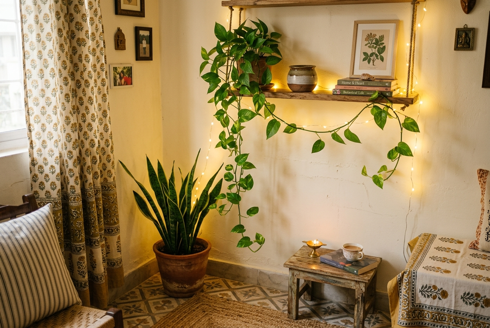
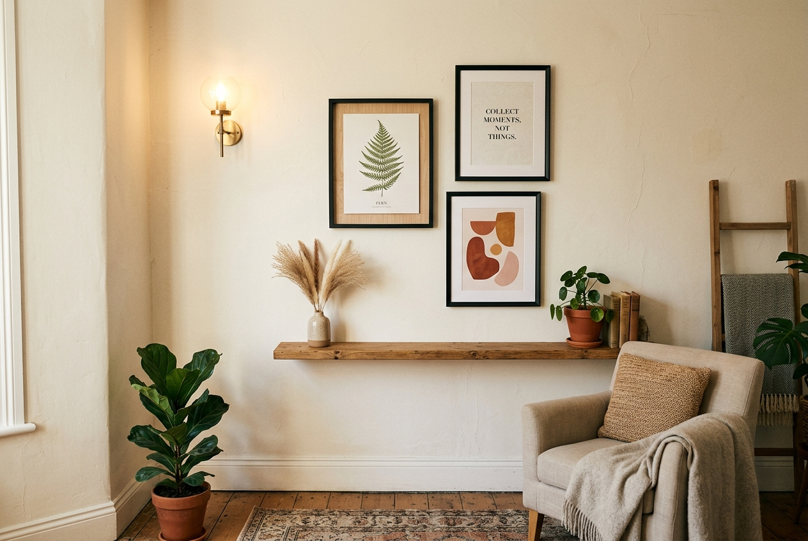

चलिए, बिल्कुल ईमानदारी से बात करते हैं।
जब भी हम इंस्टाग्राम या पिंटरेस्ट (Pinterest) खोलते हैं, तो सामने वही एकदम जादुई, बेहद खूबसूरत कमरे दिखाई देते हैं—सॉफ्ट न्यूट्रल रंग, लटकते हुए हरे पौधे, वार्म फेरी लाइट्स और करीने से सजी किताबें। और सबसे पहला ख्याल दिमाग में यही कौंधता है:
"बाप रे, इसमें तो लाखों रुपये फूंक दिए होंगे!"
लेकिन असल सच्चाई यह है, जो अक्सर कोई खुलकर नहीं बताता: उनमें से ज्यादातर कमरे महंगे नहीं होते। वे बस बहुत सोच-समझकर और सलीके से सजाए गए होते हैं।
किसी कमरे को एस्थेटिक और सुकून भरा बनाने का राज महंगी कीमत या बड़े ब्रांड में नहीं—बल्कि सलीके और छंटाई की समझ में छुपा होता है। यानी यह जानना कि क्या रखना है, क्या कमरे से बाहर फेंकना है, और अपने ₹500 को सही जगह कैसे लगाना है।
मैंने अपना काफी वक्त छोटे कमरों, किराए के मकानों और पुराने फर्नीचर वाले कमरों को संवारने में बिताया है। और मेरा यह पक्का विश्वास बन चुका है कि एक खूबसूरत कमरा हर इंसान के हक में है, चाहे उसका बजट कुछ भी क्यों न हो।
तो यह गाइड खास तौर पर उन स्टूडेंट्स, किराएदारों और उन लोगों के लिए है, जिनके बैंक खाते में शायद सिर्फ ₹2,000 बचे हैं, लेकिन वे दिनभर की भागदौड़ के बाद जब अपने कमरे में कदम रखें, तो उन्हें गहरी राहत भरी सांस का अहसास हो। यह बिल्कुल काम करने वाले बजट रूम डेकोर आइडियाज हैं—जिन्हें मैंने खुद आजमाया है और जो आपके कमरे में भी जादू कर देंगे।
"एक खूबसूरत कमरा इस बात से नहीं बनता कि आपने कितना खर्च किया—बल्कि इस बात से बनता है कि आपकी नजर कितनी साफ और सुलझी हुई है।"
📋 इस गाइड में हम क्या सीखेंगे:
- 1. सबसे पहले करें फालतू सामान की छंटाई (Decluttering) — लागत: ₹0
- 2. लाइटिंग ठीक करें—यह सब कुछ बदल देती है
- 3. एक हरा पौधा जोड़ें (₹50 से ₹200)
- 4. दीवार पर एक प्यारा सा कोना सजाएं (Accent Wall) — ₹200 से ₹800
- 5. फैब्रिक्स और कपड़ों का समझदारी से इस्तेमाल (₹300 से ₹1,200)
- 6. जो सामान पहले से है, उसे करीने से लगाएं
- 7. कमरे में भीनी खुशबू जोड़ें—सजावट का सबसे अनदेखा पहलू
- 8. आपका स्टडी टेबल/डेस्क सेटअप सबसे ज्यादा मायने रखता है
- 9. भारत में सस्ते रूम डेकोर के लिए कहां से खरीदारी करें
- 10. ₹5,000 का असली बजट प्लान और खर्च का हिसाब
- 11. अक्सर पूछे जाने वाले सवाल (FAQs)
1. सबसे पहले करें फालतू सामान की छंटाई (Decluttering) — लागत: ₹0
नया सामान खरीदने के लिए एक भी रुपया निकालने से पहले, अपने कमरे का सारा गैर-जरूरी सामान बाहर निकालिए और केवल वही चीजें अंदर वापस लाइए जिनसे आपको सच्चा लगाव है या जिनकी सचमुच जरूरत है।
बजट रूम मेकओवर का यह सबसे क्रांतिकारी और चमत्कारी कदम है—और इसमें आपका एक भी रुपया खर्च नहीं होता।
ज्यादातर कमरों को नए सामान की जरूरत नहीं होती। उन्हें गलत सामान से आजादी चाहिए होती है।
कोने में पड़ी टूटी हुई कुर्सी, वे तीन पुराने बैग जिन्हें आपने दो साल से हाथ नहीं लगाया, टेबल पर फैला रद्दी का ढेर—यह सब कमरे में आंखों को चुभने वाला बिखराव पैदा करते हैं, जिसे दुनिया का कोई महंगा शोपीस ठीक नहीं कर सकता। अगर आप ₹10,000 की पेंटिंग भी ले आएंगे, तो वह भी इस कबाड़ के बीच खो जाएगी।
कमरे से कबाड़ और गैर-ज़रूरी सामान हटाते ही कमरे को सांस लेने की खुली जगह मिलती है। और जिस कमरे में सलीके से खुली जगह छूटी होती है, वह बिना एक भी नया सामान खरीदे अपने-आप बेहद खूबसूरत और सलीकेदार लगने लगता है।
🌿 एक मेज का नियम (The One-Surface Rule)
कमरे की कोई भी एक सतह चुनिए—स्टडी टेबल, बेडसाइड टेबल या कोई रैक। अब नियम बना लीजिए कि उस पर ज्यादा से ज्यादा 3 से 5 चीजें ही रहेंगी। जैसे एक छोटा पौधा, एक मोमबत्ती, एक किताब और शायद एक छोटी सी ट्रे। बस इतना ही! चीजों के आस-पास खाली जगह ही कमरे को सलीकेदार बनाती है, भरा हुआ कबाड़खाना नहीं।
तुरंत करने वाला काम: अभी उठिए और कमरे की किसी एक मेज को पूरी तरह खाली कर दीजिए। उस पर केवल तीन अपनी पसंदीदा चीजें रखिए। फर्क देखिए! जो सुकून आपको महसूस होगा, वही सुकून हम इस पूरी गाइड में हासिल करने जा रहे हैं।
2. लाइटिंग ठीक करें—यह सब कुछ बदल देती है (₹300 से ₹800)
अगर मुझे किसी को कम बजट में कमरा सजाने की सिर्फ एक ही सलाह देनी हो, तो वह यह होगी:
अपनी. लाइटिंग. बदलें।
छत पर लगी तीखी, चुभने वाली सफेद ट्यूबलाइट किसी भी प्यारे कमरे की सबसे बड़ी दुश्मन है। वह हर चीज को सपाट और बेजान बना देती है। चाहे आपका सामान कितना भी प्यारा हो, सफेद लाइट कमरे को किसी सरकारी अस्पताल का वार्ड बना देती है।
उसे वार्म (गुनगुनी पीली/गोल्डन) लाइटिंग से बदलिए—और कमरे का पूरा नजारा जादू की तरह बदल जाएगा। वही पुराना फर्नीचर, वही दीवारें, सब कुछ वही रहेगा—लेकिन वार्म लाइट पड़ते ही कमरा अचानक किसी कैफे की तरह बेहद कोजी और अपना सा लगने लगेगा।
- फेरी लाइट्स / स्ट्रिंग लाइट्स (₹150 से ₹300): इन्हें अपने बेड के हेडबोर्ड, खिड़की के फ्रेम या बुकशेल्फ़ पर लपेट दीजिए। सिर्फ वार्म व्हाइट (Warm White) चुनें—रंग-बिरंगी डिस्को लाइट्स से बचें। यह सबसे कम खर्चे में सबसे बड़ा बदलाव लाती है।
- वार्म बल्ब वाला छोटा टेबल लैंप (₹300 से ₹600): स्टडी टेबल या बेड के पास रखा एक छोटा लैंप कमरे में सुनहरी रोशनी का एक शांत घेरा बनाता है। मीशो (Meesho) और फ्लिपकार्ट पर ₹500 के अंदर बेहतरीन टेबल लैंप मिल जाते हैं।
- मोमबत्तियां (₹100 से ₹200): बुझी हुई मोमबत्ती भी शेल्फ पर रखी हुई बहुत क्लासिक लगती है। और शाम को जब आप इसे जलाकर पढ़ाई या किताब पढ़ने बैठते हैं, तो पूरे कमरे का मूड बदल जाता है।
- फर्नीचर के पीछे वार्म LED स्ट्रिप (₹200 से ₹400): बेड के पीछे या मॉनिटर की बैक पर चिपका दीजिए। एक सॉफ्ट बैक-ग्लो मिलेगा, जो इंस्टाग्राम रील्स और तस्वीरों में बेहद प्रीमियम दिखता है।
अच्छी रोशनी केवल कमरे को खूबसूरत नहीं बनाती—यह आपके मूड को भी शांत और खुश रखती है। यह सिर्फ सजावट नहीं, विज्ञान है।


3. एक हरा पौधा जोड़ें (₹50 से ₹200)
चार दीवारों के बीच किसी जीवित पौधे को रखने में एक अलग ही जादुई सुकून होता है।
एक अकेला हरा पौधा वह कमाल कर सकता है जो शोपीस से भरा पूरा शेल्फ भी नहीं कर पाता—यह कमरे में जिंदगी, ताजगी और प्राकृतिक शांति भर देता है। जब कोई पौधों वाले कमरे में आता है, तो उसे तुरंत लगता है कि इस जगह की प्यार से देखभाल की जाती है।
और सबसे अच्छी बात? आपको किसी विदेशी या महंगे पौधे की जरूरत नहीं है। हमारे देसी पौधे सबसे सुंदर लगते हैं:
- मनी प्लांट (Pothos): नीचे की ओर बेल की तरह खूबसूरत लटकता है, मरता लगभग कभी नहीं, और लोकल नर्सरी पर ₹30 से ₹50 में मिल जाता है। इसे ऊंची शेल्फ पर रखिए और नीचे लहराने दीजिए।
- स्नेक प्लांट (Sansevieria): बेहद सीधा, सख्त और मॉडर्न दिखने वाला पौधा। कम धूप और कम पानी वाले कमरों के लिए वरदान। ₹80 से ₹150 में आसानी से मिल जाता है।
- एलोवेरा (Aloe Vera): सेहत के लिए भी फायदेमंद और देखने में भी सुंदर। ₹50 में किसी भी खिड़की की धूप में मजे से फलता-फूलता है।
- पीस लिली (Peace Lily): सफेद फूलों वाला, हवा को शुद्ध करने वाला खूबसूरत इनडोर प्लांट। करीब ₹100 से ₹180।
पौधे को किसी सादे मिट्टी के गमले (टेराकोटा) या पुराने सिरेमिक मग में लगा दीजिए। खिड़की या डेस्क पर रख दीजिए। वह अकेला हरा पौधा कमरे की सांस लेने का अंदाज बदल देगा।
✨ बिल्कुल मुफ्त पौधे का नुस्खा
पड़ोस या किसी दोस्त के घर से मनी प्लांट की एक टहनी (कटिंग) ले आइए और उसे पानी भरी कांच की खाली बोतल या जैम के जार में डाल दीजिए। 2 से 3 हफ्तों में जड़ें निकल आएंगी। खिड़की पर रखा यह कांच का जार किसी महंगे शोपीस से 10 गुना सुंदर लगता है। खर्च: ₹0। रिजल्ट: लाजवाब!
4. दीवार पर एक प्यारा सा कोना सजाएं (Accent Wall) — ₹200 से ₹800
कमरे की दीवारों को जिंदा करने के लिए आपको पूरी दीवार पेंट करने की जरूरत नहीं है (खासकर अगर आप किराए पर रह रहे हैं)।
'वॉल मोमेंट' (Wall Moment) का सीधा मतलब है दीवार का एक ऐसा कोना, जहां कमरे में घुसते ही नजर टिक जाए। वह चाहे एक बड़ी तस्वीर हो या तीन-चार छोटे फ्रेम्स का सलीकेदार झुंड।
ऑप्शन A: गैलरी वॉल (Gallery Wall - ₹200 से ₹500)
अपनी पसंदीदा 3 से 5 तस्वीरें चुनिए—कोई मोटिवेशनल कोट, पुरानी यात्रा की तस्वीर या कोई पेंटिंग। पास के फोटो स्टूडियो से ₹20-30 में 4x6 साइज में प्रिंट करवाइए। सस्ते लोकल मार्केट या ऑनलाइन से सादे काले फ्रेम्स में लगाइए। दीवार पर थोड़ा टेढ़े-मेढ़े (asymmetrical) अंदाज में टांग दीजिए। यह देखने में बेहद लग्जरी लगता है, जबकि कुल खर्च ₹200 से ₹300 ही आता है।
प्रो टिप: दीवार पर कील ठोकने से पहले सभी फ्रेम्स को फर्श पर बिछाकर देख लें और मोबाइल से फोटो खींच लें। फिर उसी क्रम में दीवार पर लगाएं। फालतू छेद करने से बच जाएंगे।
ऑप्शन B: सिंगल स्टेटमेंट पीस (₹100 से ₹300)
दीवार पर दस छोटी-मोटी चीजें टांगने के बजाय सिर्फ एक बड़ा पोस्टर, मैक्रम वॉल हैंगिंग या कोई सूती कपड़ा/दुपट्टा बेड के ऊपर लगा दीजिए। एक बड़ा पीस कमरे को भरा-भरा और फोकस्ड दिखाता है।
ऑप्शन C: नेचर वॉल (₹0 से ₹50)
सूखे हुए पत्ते, फूल या मोरपंख इकट्ठे करें। भारी किताबों के बीच उन्हें कुछ दिन दबाकर सुखा लें। सादे फ्रेम में या वाशी टेप (washi tape) की मदद से दीवार पर चिपकाएं। यह ऑर्गेनिक, नेचुरल और बेहद खूबसूरत लगता है।
"आपके कमरे को किसी शोरूम जैसा दिखने की जरूरत नहीं है। उसमें बस आपकी अपनी रूह और पहचान झलकनी चाहिए।"
5. फैब्रिक्स और कपड़ों का समझदारी से इस्तेमाल (₹300 से ₹1,200)
बिना फर्नीचर बदले अगर किसी कमरे का चेहरा सबसे तेजी से बदला जा सकता है, तो वह है टेक्सटाइल्स यानी पर्दे, चादर, कुशन और थ्रो (दुपट्टे/कंबल)।
कुर्सी पर लापरवाही से डाला गया एक खूबसूरत थ्रो ब्लैंकेट, बेड पर रखे दो टेक्सचर्ड कुशन, और प्लास्टिक जैसे पर्दों की जगह सादे कॉटन के सफेद पर्दे—कमरे को तुरंत कोजी बना देते हैं।
- टेक्सचर्ड थ्रो ब्लैंकेट (₹350 से ₹600): इसे कुर्सी की पीठ पर या बिस्तर के कोने पर लापरवाही से डालिए। सलीके से तह नहीं लगाना है—वही बिखरा हुआ अंदाज इसे इंस्टाग्राम-रेडी बनाता है। टेराकोटा, क्रीम या सेज ग्रीन रंग सबसे सुंदर लगते हैं।
- 2 से 3 कुशन कवर्स (₹150 से ₹300 प्रति पीस): एक सादा और एक बुना हुआ (woven) कुशन मिलाइए। मीशो पर बहुत सस्ते कॉम्बो मिल जाते हैं।
- शीयर कर्टेन / पारदर्शी सफेद पर्दे (₹200 से ₹500): ये बाहर की धूप को छानकर कमरे में लाते हैं और खिड़की को बड़ा दिखाते हैं। पर्दे को हमेशा खिड़की के फ्रेम से थोड़ा ऊपर और चौड़ा टांगें, कमरा ऊंचा दिखेगा।
- छोटी जूट या सूती चटाई (₹400 से ₹800): बिस्तर के पास या स्टडी टेबल के नीचे बिछी एक छोटी दरी नंगे फर्श पर गजब की गर्माहट लाती है।
🌿 बजट डेकोर का कलर रूल (2-3 Colour Rule)
पूरे कमरे के लिए केवल 2 से 3 रंग चुनिए और उसी पर टिके रहिए। जैसे: वार्म न्यूट्रल्स (क्रीम, बेज, टेराकोटा) और पौधों का प्राकृतिक हरा रंग। जब सारे कपड़े और चीजें एक ही रंग परिवार की होती हैं, तो बेमेल पुराना फर्नीचर भी सोचा-समझा डिजाइन लगने लगता है।
6. जो सामान पहले से है, उसे करीने से लगाएं (₹0 से ₹200)
यह तरीका सबसे ज्यादा असरदार है और इसमें एक धेला भी खर्च नहीं होता। और हां, यह भी डेकोर का ही हिस्सा है।
अपनी किताबों को देखिए—क्या वे बेतरतीब बिखरी हैं? उन्हें सीधी खड़ी कीजिए और रंग या ऊंचाई के हिसाब से सजा दीजिए। अपनी मेज पर नजर डालिए—किचन से एक छोटी ट्रे लाकर सारे पेन, सिक्के और ईयरफोन उसमें रख दीजिए।
सफाई और व्यवस्था ही अदृश्य सजावट है। एक साफ-सुथरा साधारण कमरा हमेशा सजे-धजे कबाड़खाने से सौ गुना ज्यादा खूबसूरत और सुकून भरा दिखता है।
- किताबों को सलीके से लगाना: शेल्फ पर रखी किताबें तुरंत किसी मैगजीन कवर जैसा लुक देती हैं।
- छोटी ट्रे या कटोरी: मेज पर फैले सिक्कों, चाबियों और पेन को एक जगह समेटकर रखें।
- केबल मैनेजमेंट: चार्जर और तारों को बांधकर छुपाएं। लटकती हुई उलझी तारें किसी भी खूबसूरत टेबल का लुक खराब कर देती हैं।
- दरवाजे के पीछे एक हुक: बैग और जैकेट को फर्श या कुर्सी पर फेंकने के बजाय टांगने की आदत बनाएं।
7. कमरे में भीनी खुशबू जोड़ें—सजावट का सबसे अनदेखा पहलू (₹100 से ₹400)
इस बात का जिक्र आमतौर पर बजट डेकोर की गाइड में कोई नहीं करता: कमरे की खुशबू भी इस बात का हिस्सा है कि वह कमरा महसूस कैसा होता है।
आप कितना भी सुंदर कमरा सजा लें, अगर उसमें सीलन या बंद कमरे की बासी गंध आ रही है, तो सारा माहौल एक सेकंड में चौपट हो जाता है। दूसरी तरफ, एक बेहद सादा कमरा अगर हल्की, मीठी और साफ खुशबू से महक रहा हो, तो वह फाइव-स्टार होटल जैसा सुकून देता है।
- अगरबत्ती / धूपबत्ती (₹30 से ₹80): चंदन, लैवेंडर या मोगरा। सुबह सफाई के बाद एक अगरबत्ती जलाना पूरे दिन के मूड को बदल देता है।
- सेंटेड कैंडल्स (₹150 से ₹350): वैनिला या एम्बर की खुशबू कोजी अहसास के लिए बेहतरीन है।
- खुली खिड़कियां + पौधे: बिल्कुल मुफ्त। ताजी हवा और पौधों की सोंधी सांस दुनिया के किसी भी रूम फ्रेशनर से बेहतर है।
8. आपका स्टडी टेबल/डेस्क सेटअप सबसे ज्यादा मायने रखता है (₹200 से ₹600)
अगर आप स्टूडेंट हैं या वर्क-फ्रॉम-होम करते हैं, तो दिन का एक बड़ा हिस्सा इसी डेस्क पर बीतता है। और एक सुलझी हुई टेबल कमरे को खूबसूरत और प्रोडक्टिव दोनों बनाती है।
- डेस्क को पूरी तरह साफ करें और सिर्फ वही चीजें रखें जिनकी रोज जरूरत है। खाली टेबल तुरंत मन को हल्का करती है।
- कांच की बोतल में मनी प्लांट कोने में रख दीजिए, यह बिना जगह घेरे हरियाली देगा।
- वार्म टेबल लैंप (₹300 से ₹500): छत की ट्यूबलाइट बंद करके सिर्फ टेबल लैंप की रोशनी में काम करने से आंखों पर जोर कम पड़ता है और ध्यान ज्यादा लगता है।
- एक सुंदर डायरी और अच्छा पेन: डेस्क पर रखी एक क्लासिक नोटबुक आपकी जगह को एक संजीदा लेखक या रिसर्चर का कोना बना देती है।
"एक सुलझी हुई टेबल केवल दिखने में सुंदर नहीं होती—वह चुपचाप यह बयां करती है कि आप अपने काम और अपनी जिंदगी को गंभीरता से लेते हैं।"
9. भारत में सस्ते रूम डेकोर के लिए कहां से खरीदारी करें
आपको किसी महंगे मॉल जाने की बिल्कुल जरूरत नहीं है। असली खजाने इन जगहों पर मिलते हैं:
मीशो (Meesho)
कुशन कवर, पर्दे, फेरी लाइट्स और बास्केट्स के लिए सबसे किफायती। खरीदने से पहले हमेशा खरीदारों की असली फोटो और रिव्यू देखें।
स्थानीय संडे मार्केट
फोटो फ्रेम, गमले, पुरानी किताबें और विंटेज शोपीस। अनोखी और सस्ती चीजें ढूंढने की सबसे अच्छी जगह।
लोकल नर्सरी
ऑनलाइन से आधी कीमत पर ताजे पौधे और मिट्टी के गमले। अक्सर कटिंग्स मुफ्त या ₹10 में मिल जाती हैं।
फ्लिपकार्ट / अमेजन
टेबल लैंप, LED स्ट्रिप्स और स्टोरेज बॉक्स के लिए। हमेशा 'Lowest Price' और 4-स्टार फिल्टर लगाएं।
डेसो (Daiso)
अगर आपके शहर में है, तो यह जापानी स्टोर खजाना है। लगभग हर चीज ₹99 में बेहद सुंदर और सलीकेदार मिलती है।
थ्रिफ्ट स्टोर / OLX
सेकंड-हैंड लैंप, लकड़ी की छोटी मेज और फ्रेम्स कौड़ियों के भाव में मिल जाते हैं।
एक जरूरी नियम: कोई भी चीज सिर्फ इसलिए कभी न खरीदें क्योंकि वह बहुत सस्ती है। केवल वही सामान लें जो आपके दिल को सचमुच भाए। सस्ते गैर-जरूरी सामान से भरा कमरा कभी सुकून भरा नहीं बन सकता; कम लेकिन चुनिंदा चीजों वाला कमरा हमेशा खूबसूरत लगेगा।
10. ₹5,000 का असली बजट प्लान और खर्च का पूरा हिसाब
अगर मेरे हाथ में ₹5,000 हों, तो मैं एक कमरे का कायाकल्प करने के लिए पाई-पाई इस तरह खर्च करूंगी:
| सामान | कहां से खरीदें | अनुमानित खर्च |
|---|---|---|
| वार्म फेरी लाइट्स (5 मीटर, वार्म व्हाइट) | मीशो / लोकल बिजली की दुकान | ₹200 |
| एक टेबल लैंप + वार्म LED बल्ब | फ्लिपकार्ट / स्थानीय बाजार | ₹450 |
| एक इनडोर पौधा + मिट्टी का गमला | लोकल नर्सरी | ₹150 |
| 3 प्रिंटेड फोटो + काले सादे फ्रेम्स | फोटो स्टूडियो + लोकल शॉप | ₹300 |
| एक थ्रो ब्लैंकेट (टेराकोटा या क्रीम) | मीशो / संडे मार्केट | ₹500 |
| 2 टेक्सचर्ड कुशन कवर्स | मीशो | ₹350 |
| सफेद शीयर कर्टेन (एक खिड़की के लिए) | मीशो / कपड़ा मार्केट | ₹400 |
| डेस्क के लिए छोटी ट्रे | डेसो / लोकल मार्केट | ₹150 |
| 2 खुशबूदार मोमबत्तियां | लोकल स्टोर / मीशो | ₹180 |
| दीवार के लिए मैक्रम हैंगिंग या आर्ट प्रिंट | मीशो / फ्लिपकार्ट | ₹300 |
| अगरबत्ती का पैकेट + होल्डर | पास की किराने की दुकान | ₹70 |
| अचानक पसंद आने वाली किसी खास चीज के लिए रिजर्व | जब भी कोई प्यारी चीज मिले | ₹1,950 |
| कुल योग | — | ₹5,000 |
और वे जो बचे हुए ₹1,950 हैं? उन्हें एक ही दिन में जल्दबाजी में खर्च मत कर दीजिए। उन्हें बचाकर रखिए—जब कभी किसी संडे मार्केट में कोई अनोखा चाय का मग दिख जाए, या किसी फुटपाथ पर पुरानी खूबसूरत किताब मिल जाए, तब इत्मीनान से खर्च कीजिए।
सबसे बेहतरीन कमरे धीरे-धीरे, सब्र और प्यार से संवारे जाते हैं। किसी हड़बड़ी वाली शॉपिंग से नहीं।
"सबसे खूबसूरत जगहें वे नहीं होतीं जिन पर सबसे ज्यादा दौलत लुटाई गई हो। वे होती हैं जिनमें सबसे ज्यादा सच्चाई और सादगी रची-बसी हो।"
वह एक बात जो आपको कोई नहीं बताता
कम बजट में कमरे को खूबसूरत और शांत बनाने का सबसे बड़ा रहस्य यह है:
इसे टुकड़ों में, धीरे-धीरे कीजिए। एक ही वीकेंड में सब कुछ बदलने की कोशिश मत कीजिए।
पहले गैर-ज़रूरी सामान की छंटाई (Decluttering) से शुरुआत कीजिए। कमरे को खाली करके दो दिन उस सुकून को महसूस कीजिए। फिर लाइटिंग बदलिए और देखिए कि रात में कमरा कैसा लगता है। फिर एक पौधा ले आइए। हर कदम अपने पिछले कदम को और निखारता जाएगा।
आपका कमरा किसी पिंटरेस्ट बोर्ड की नकल जैसा दिखने के लिए मजबूर नहीं है।
उसे बस आपका अपना महसूस होना चाहिए—गर्म, सुलझा हुआ और सुकून से भरा।
शुरुआत आज ही किसी एक छोटी सी चीज से कीजिए। फालतू चीजें हटाइए। एक पौधा रखिए। लाइट बदलिए। प्यार से किए गए छोटे-छोटे बदलाव ही आगे चलकर कुछ बेहद खूबसूरत रच देते हैं। 🌿